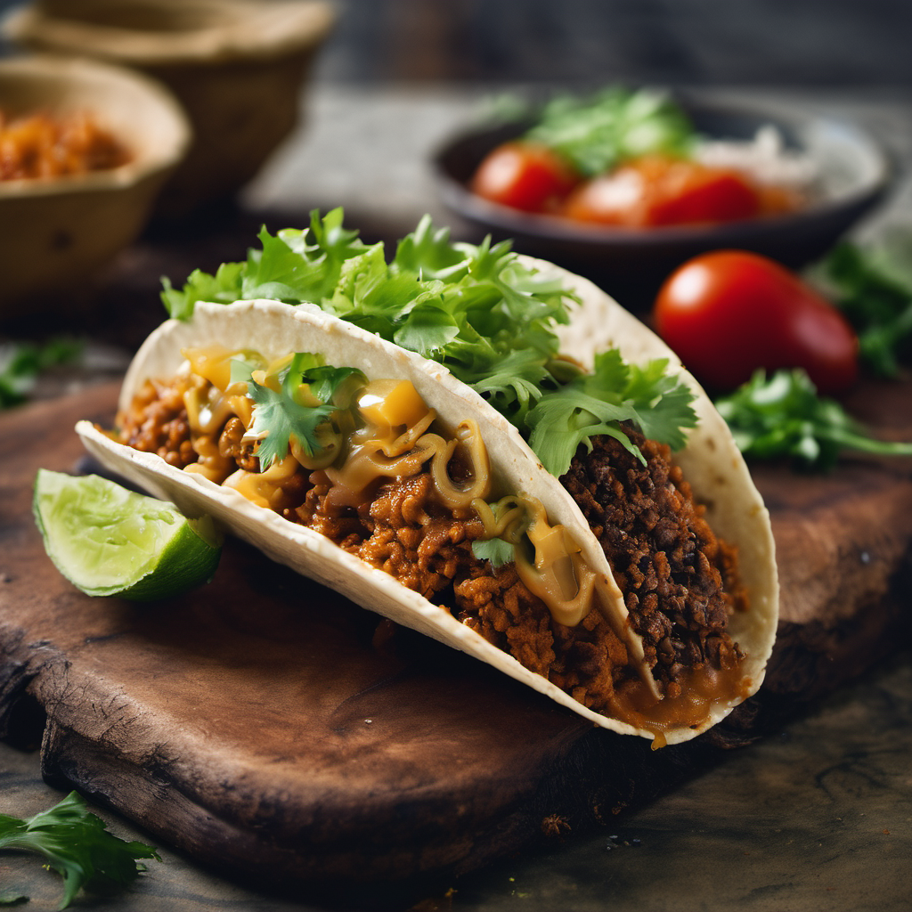
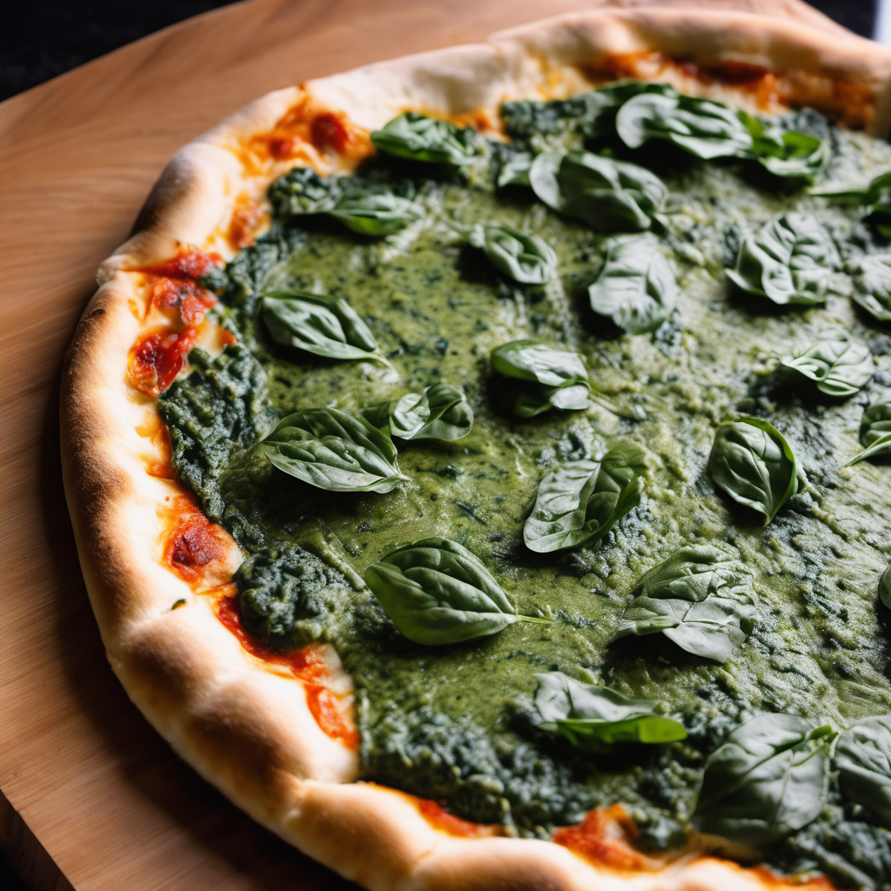
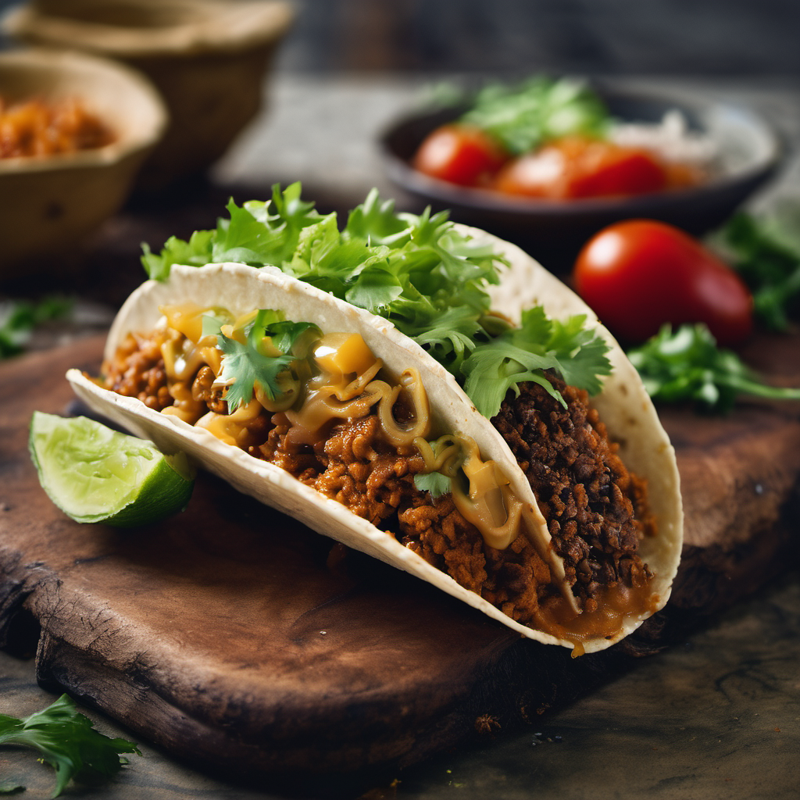
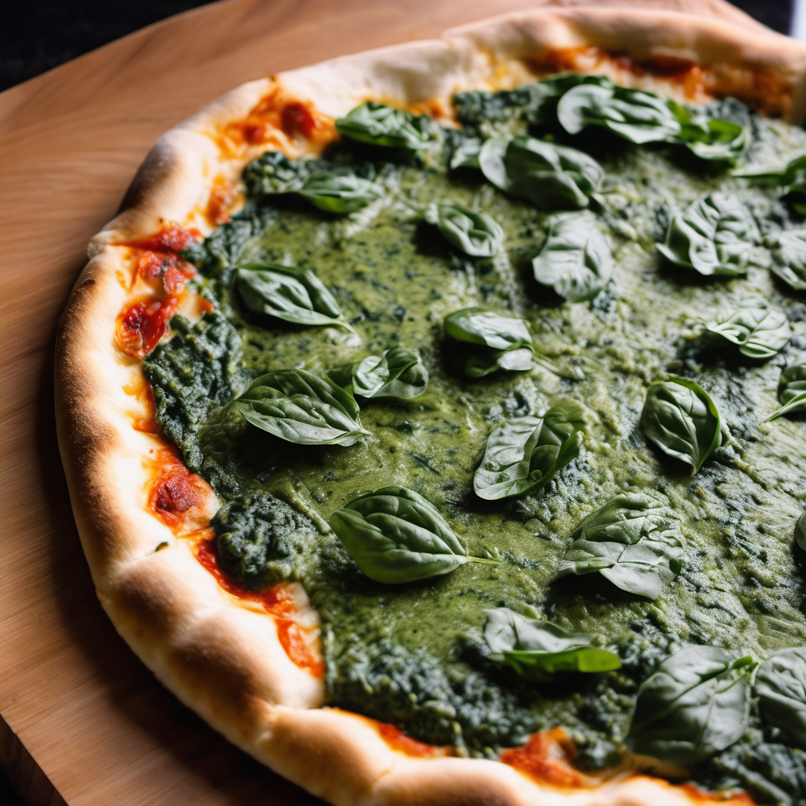

Quem Somos
Bem-vindo ao mundo enigmático e irresistível do nosso food truck! Somos cinco indivíduos unidos pela paixão por explorar os limites do paladar e desafiar as convenções culinárias. Nossas receitas bizarras e não-convencionais que preparamos com ingredientes que farão você questionar, mas ao mesmo tempo desejar mais.
Nosso truck não segue rotas previsíveis. Movemo-nos de forma aleatória e secreta, tornando cada encontro uma experiência única e inesquecível. O local onde estaremos no dia é um segredo revelado apenas nas redes sociais por nossos seguidores dedicados.
No nosso cardápio exclusivo, você encontrará apenas cinco pratos, cada um mais intrigante e saboroso que o outro. Cada mordida é uma descoberta, uma viagem ao desconhecido que desafia e deleita seus sentidos.
Acompanhe-nos nas redes sociais, desvende o enigma do nosso paradeiro, e venha descobrir por que nossas criações culinárias bizarras e deliciosas são um sucesso. Nós somos o enigma culinário que você não sabia que precisava desvendar.
Depoimentos
Meu amigo comeu e foi parar no hospital. Quando ele acordou do coma, disse que foi a melhor experiência da vida dele.
— João Distemidus
Quase morri duas vezes e uma vez apaguei e acordei na Argentina. Melhor sensação que já senti, sem comparação.
— Robertinho Motoqueiro
Vocês acham que conseguem imaginar como é comer na Última Parada, mas vocês não fazem ideia!
— Luana C# de Banana